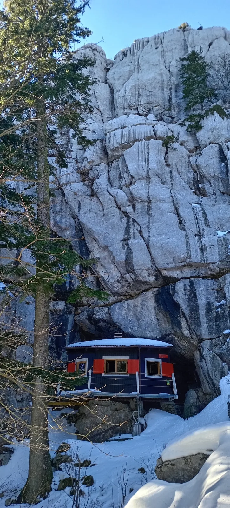

Put ka Novoj 2025.
Vrlo intenzivna priča o tome kako dva tjedna mogu predstavljati prikaz životnih zgoda i nezgodan. Odmah da napišem bilo nam je predivno i ponovila bih sve opet

Autorica: Ana Ercegovac
Fotografije: Daniel Lacko, Edo Vričić, Nenad Dimitrijević, Mateja Dimitrijević, Vedran Ferenčak
Vrlo intenzivna priča o tome kako dva tjedna mogu predstavljati prikaz životnih zgoda i nezgodan. Odmah da napišem bilo nam je predivno i ponovila bih sve opet, ali ipak šašavo je za shvatiti što se sve izdogađalo na putu ka proslavi Nove godine u društvu Velebitaša. Plan je kao i većinom oformljen u pušioni, a želja je svima ista – želimo slaviti Novu godinu zajedno. Bilo je tu raznih prijedloga od nekog otoka, pa put u Crnu Goru, svašta nešto… i onda je došao Edo s ultimativnom idejom o odlasku na Sjeverni Velebit – pastirski stanovi kod Alana. Ideja je na sastanku jednoglasno prihvaćena i naš vrijedni Edo je počeo sve pripremati i dogovarati. Zainteresiranih za proslavu Nove godine je bilo mnogo, pa uz Edu Vričića u toj grupi ljudi su bili i kapetan Darko Jeras, Barbara pročelnica Domitrović, moji Dimitrijevići iz ASAK-a (Mateja - Mata, Sara i Nenad - Dexter Dimitrijević), Ana Ercegovac – ja, Kata Azinović, Piero Anić (SKOL), Vedran Ferenčak, Marko Ličko, Gorana Perić. Luka Ivančić, Daniel Lacko, Čedo Josipović, Dora Troha, Rene Borna Gržin, predsjednica Ivana Fundurulić i Paol Karoshi (VÖH). Želja je bila svima ista - da smo skupa, da nam je toplo i lijepo i da je snijeg oko nas, a cilj vrlo jasan put ka novoj 2025. godini.
Ratkovo sklonište i Nova 2025. godina, (Daniel Lacko)
Dan nakon Božića se događa život, odnosno priča o usponima i padovima. Iz Nacionalnog parka Sjeverni Velebit nam javljaju da su uvjeti nemogući i da naš plan o bivanju u pastirskim stanovima nije izvediv. U grupi za organizaciju „Zimska akcija Sjeverni Velebit 24-25“ počinje brujati kao u košnici. Svi predlažu nove ideje i istovremeno ne skrivajući tugu što je originalan plan propao. Snalazimo se, osmišljavamo, bodrimo jedni druge, nadopunjavamo nove ideje, šaljemo upite i pitamo se gdje ćemo sad? Nakon cijelog dana upita, kaosa i entropije (posveta Čedi – Čedo evo ti primjer) rađa se ideja o odlasku kući, odnosno na Ratkovo sklonište čija je fotografija s ovog izleta vidljiva na slici 1. Svi smo bili svjesni da nam neće biti lako, da ćemo vjerojatno morati hodati od Tuka do Ratkovog, ali to što smo ponovno imali plan je unijelo smiraj u grupu. Uz dio ekipe koja je već poimenice navedena, javljaju se i novi zainteresirani a to su: Marina Grandić, Lovel Kukljan, Dino Groznić i Petra (ne znam joj prezime) kao ekipa iz SUE. S obzirom na uvjete odlaska do Ratkovog skloništa i dužine puta dio ljudi je otpao pa ipak zbog životne ravnoteže je i dio ušao u cijeli priču. Ekipa koja je krenula na izlet prema Ratkovom skloništu se sastojala od 18 hrabrih ili ludih i također zahvaljujući Srbima i Paolu iz Austrije je postala međunarodna ekipa. Obzirom da čitate ovaj tekst znači da je sve prošlo dobro i evo koristim priliku da prikažem na slici 2 dio ekipe koji se zajedno 2.1. 2025. spustio s Ratkova skloništa u Tuk pa zatim u naše Sušilo.
Slika 2. Ekipa iz Sušila (Edo fotografira), autor: Edo Vričić
Vraćamo se na početak, dakle cilj je bio jasan, a plan je bio sljedeći: na Ratkovo sklonište se kreće 30. 12. 2024. u više ekipa, a popis ekipa je idući:
auto 1 – Čedo i Dora s Ajsijem
auto 2 – Rene, Lacko i Ivana
auto 3 (simbolično 3) – Mateja, ja (Ana), Dexter i Sara
auto 4 – Fero i Edo
auto 5 – Kata i Ličko
auto 6 – Paol
auto 7 – Marina i Lovel
auto 8 – Dino i Petra
30. prosinca 2024.
Na putu prema Ratkovom se opet događa život i auto 1 i auto 2 kreću na vrijeme prema Tuku. Auto 3 obavlja zadnje trzaje kupnje i kreće prema Tuku u kasno popodne, svi ostali auti kreću prema Tuku 31.12.2024. Većina navedenih ljudi je otprilike znala što ih očekuje na putu kroz snijeg i prema gore se išlo na različite načine: neki su išli na skijama, neki na krpljama, neki s derezama, a bilo je onih i koji su po putu nastavili bez dodataka već s gojzericom po snijegu.
Jedan od uzbudljivijih dijelova ove priče je što kad se krene od Tuka, vrlo brzo se ostaje bez signala tako da kad smo Mata, Dexter, Sara i ja došli do Tuka samo smo znali tko je otišao prije nas i tko dolazi nakon nas. U tom duhu neizvjesnosti odlučili smo popakirati stvari, preuzeti dereze i štapove od tete iz Tuka koje su nam naši dobri Velebitaši ostavili i krenuti „lagano“ na put. E pa bilo je sve, samo ne lagano. No idemo polako, tempom kojim smo i mi hodali. Krenuli smo polako uz brdo, veseli i spremni. Nakon nekog vremena i nekoliko kilometara dolazimo do Matić poljane i obilazimo spomenik i drugove partizane u noći što je prikazano slikom 3.
Slika 3. Mata i Ana se educiraju u noći, autor Nenad Dimitrijević
Vrlo brzo nakon nastanka slike 3 lagano se počinje javljati umor zbog količine tereta koji smo odlučili ponijeti na svojim leđima. Da se razumije, da smo pretjerali jesmo, da smo napojili dobro naše pleme i same sebe, jesmo. Jel` se isplatilo nositi 8 litara žestokog i 18 piva na leđa nas četvero?
Pa iskreno, kako Gibonni kaže u pjesmi Ovo mi je škola: „Ovo mi je škola i drugi puta ću pametnije“.
Ipak da se vratimo na staze do Ratkovog, tu večer smo odhodali sve do planinarske kuće Jančarica Tamo nas je dočekalo veselo neznano društvo koje je lijepo prethodno ugrijalo i očistilo kuću. Svaka čast i hvala ljudima kojima nažalost nisam upamtila imena (radi se o trojici neznanih planinara).
31. prosinca 2024.
Utorak počinje vrlo rano, prvo buđenje je bilo u 6 ujutro jer je nekome (čitaj Dexteru) ostao upaljen alarm za posao. Od toga dana pa nadalje još više mrzim alarme. Na kraju smo se probudili kako je i bio dogovor, u 7 ujutro, popili kaficu, jeli, pozdravili se s našim domaćinima i krenuli na pohod prema Ratkovom. Ovaj put je bilo jako lijepo, sunce je sijalo, mi smo dio stvari iz ruksaka već pojeli/ popili pa je bilo lakše hodati. Oduševljavala nas je ljepota cijelog rezervata i čistoća bijelog snijega što se vidi na slici 4.
Slika 4. Beli smiraj, autor: Mateja Dimitrijević
Kako pjesma Bela planina (pionirska) kaže:
„Pričali mi priču o beloj planini
Šumi, travi, zemlji i belom kamenu
Zecu, medi, vuku i maloj Marini
O kolibi beloj u belom vremenu“
Tako je i nas nakon nekog vremena hodanja po bijelom dočekala koliba u bijelom vremenu. Uz ljepotu tog prizora još ljepša stvar je bila vidjeti poznata lica koja nas dočekuju u toj toploj kolibi. Dočekali su nas Lacko i Čedo s poticajnim uzvicima, pas Ajsi sa svojim veselim lajanjem, Dora sa svojim snenim tek otvorenim očima i Rene i Ivana s osmijesima punim podrške. Ljudi moji pa srce ko` kuća. Družili smo se uz vatru i prepričavanje dogodovština po putu. Srbi (čitaj Mata, Ana, Sara i Dexter) su tada saznali da je ekipa koja nas je dočekala tu i prespavala, tako da nitko od nas još nije došao do cilja. Svi smo i dalje bili na putu ka Ratkovom i ka Novoj 2025. godini. Nakon različitih polaznih vremena taj dan smo se svi nabrojani (Srbi i Velebitaši) zaputili prema Ratkovom, neki na vrijeme, a neki nakon popodnevnog rakija spavanja. Uzrok kasnijeg kretanja nekih od nas je bila naravno i ljubav prema otvorenom ognjištu koje je vidljivo na slici 5.
Slika 5. Odmor i grijanje uz ognjište na Plani, autor: Mateja Dimitrijević
sreli s Marinom i Lovelom, a dok smo mi bili u kolibi, dio ekipe je krenuo iz Tuka te na slici 6 možete vidjeti i izgled Matić poljane po danu. Mata i ja nastavljamo naš „lagani“ put prema gore te radimo pauzu kod table za 13. kilometar, gdje su naišli na nas Dino i Petra s kojima smo se malo podružili. Nakon njih smo odlučili sačekati i ostale (Edo, Kata, Fero i Paol). Ekipa je bila oduševljena kada su čuli da smo se svi našli po putu i da zapravo ide svatko svojim tempom, a opet se krećemo kao pleme, štoviše svi u isto vrijeme (pod time mislim svi u isti dan, ali je ovako bolje zvučalo). Da dobro ste pročitali Ličko nam se ipak nije pridružio, ali sam zahvalna da je doveo našeg vođu Edu. U čast našeg Lička dodajem i ovu sliku 7 kao dokaz da je bio s nama.
Slika 6. Dolazak zadnje ekipe na Matić poljanu, autor: Edo Vričić
Slika 7. Ličko je bio tu! Autor: Edo Vričić
Edo i Kata su nam ispričali da je izgledalo kao da svijetla (Mata i ja) stalno bježe od njih, ali je stvar u tome da od zvuka prćenja snijega nismo niti čuli da je netko iza nas. Malo smo se podružili, jedni druge motivirali i krenuli zajedno dalje prema Ratkovom. Samo da se zna Fero i Paol su išli na skijama što je bilo jako veselo, ali i pohvalno za Feru da je odlučio probati turno skijanje. Fero moram ti priznati da si odličan čovjek! Nek se zna da je svatko od nas prolazio kroz svoju pasiju uspona i padova na putu ka Ratkovom, pa na slici 8 možete vidjeti i takav jedan pad, kako ne bi ispalo da stavljam samo romantične slike kada je Mata na akciji.
Slika 8. Uz uspone bilo je i padova..., autor Vedran Ferenčak
Put do Ratkovog je bio zabavan, svašta se još nešto dogodilo, ali to će ostati na znanje samo sudionicima ove akcije pssst.
Ipak nešto mora biti i tajna, a i ne smijem previše duljiti jer vam se možda neće onda dati čitati do kraja. Na kraju smo svi došli umorni, ali puna srca u Ratkovo gdje su nas dočekali naši dragi ljudi sa osmjesima i okrjepom.
Nova godina se lijepo proslavila, svi smo se ismijali, okrijepili pustim tekućinama, najeli domaćinskih proizvoda i Reneovog zajedničkog lonca te grijali srca uz zvuke gitare koju su svirali Mister Lacko i Kapetan Puž – Edo. Hvala im na sviranju i hvala svima na Novoj godini koja će se još dugo pamtiti. Atmosfera proslave je trajala dugo u noć, tako da je većina nas sutradan ostala u Ratkovom skloništu. Prostor naše kuće, jutro nakon Nove, je izgledao tipično za prostor nakon partija što je prikazano slikom 9.
Slika 9. Ratkovo jutro nakon proslave Nove godine, autor: Vedran Ferenčak
1. siječnja 2025.
Tako da shodno prethodnoj noći većina nas je odlučila ostati u kući cijeli dan, svatko je provodio slobodno vrijeme kako mu je bilo najdraže. U prvom dijelu dana ekipu napuštaju Estaveličari (Lovel, Marina ( i SOV), Dino i Petra). Svi ostali odmaraju, igraju društvene igre, ljubuju, svašta nešto. Sve prostorije Ratkovog skloništa su bile korištene, a neki su čak obišli i vrhove oko Ratkovog – Šerpas i vrh Samarskih stijena. Ti neki, hrabri su Edo, Paol, Fero, Lacko, Ivana i Rene. Svaka im čast, ipak se vidi tko ima dugogodišnje iskustvo. Kada se ekipa hrabrih vratila s vrhova dan se nastavio u druženju i papanju ostataka zajedničkog lonca koji je skuhao Rene. Navečer otkrivamo čari ginočaja i još jednom slavimo što smo se svi popeli gore i nastavljamo druženje do dugo u noć.
2. siječnja 2025.
Ujutro se budimo, spremamo svoje stvari, pijemo kavu, doručkujemo. Praznimo lagano Ratkovo od svojih stvari i čistimo. Krećemo iz Ratkovog čak 15 minuta ranije nego što je dogovoreno, odnosno krećemo 15 do 10 iz Ratkovog prema Tuku. Prizore puta prema dolje možete vidjeti na idućim slikama 10 i 11:
Slika 10. Mala pauzica posljednje ekipe sa Ratkova skloništa, autor: Nenad Dimitrijević
S lika 11. Žuta kapica i ekipa na putu prema Sušilu, autor: Mateja Dimitrijević
Povratak do Tuka je bio mačji kašalj naspram puta prema gore. Tako da na putu prema dolje smo čak i pjevali, smijali se i uživali u prizorima koje nam priroda pruža. Po putu smo se dogovorili da ćemo nastaviti naše druženje u Sušilu – što ste već vidjeli na slici 2. U Sušilu se kao što i sama riječ kaže sušimo, pijemo pivo i jedemo predobar Ferin grah. Ma to može samo Fero – imati cijeli lonac graha koji nas je čekao da se spustimo. Naravno kako tradicija nalaže svi smo jeli iz jednog lonca s jednom do možda dvije žlice. Jer svaki Velebitaš i Velebitašica znaju da je tako najslađe. Uz smijeh i grljenje smo završili ovu međunarodnu akciju i naš put ka Novoj 2025. godini je odrađen. Anegdote i muke ovog puta će se još dugo pamtiti, ali najbitnije od svega – bilo je ludo, lijepo, mazohistički - ma zapravo bila je to prava špiljarska nova godina!
Sretna Nova 2025. godina svima i puno pusa do iduće akcije <3 uz poticajnu sliku 12.
Slika 12. Ajmoooooo, autor: Edo Vričić